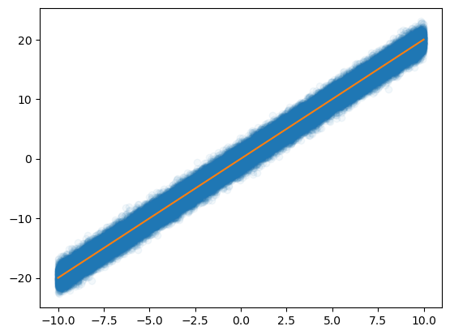
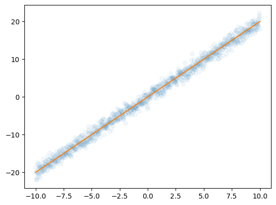

#{{<video https://youtu.be/playlist?list=PLQqh36zP38-wHAizLm_MYaUweataauffD&si=U5TXo5UgkRGc6a-F >}}05wk-1: 깊은신경망 (4) – GPU 사용법, SGD, Softmax와 CrossEntropy

1. 강의영상
2. Imports
import torch
import matplotlib.pyplot as plt
from fastai.data.all import *
import torchvision3. CPU vs GPU
- 파이토치에서 GPU를 쓰는 방법을 알아보자. (사실 지금까지 우리는 CPU만 쓰고 있었음)
A. GPU 사용방법
- cpu 연산이 가능한 메모리에 데이터 저장
torch.manual_seed(43052)
x_cpu = torch.tensor([0.0,0.1,0.2]).reshape(-1,1)
y_cpu = torch.tensor([0.0,0.2,0.4]).reshape(-1,1)
net_cpu = torch.nn.Linear(1,1) - gpu 연산이 가능한 메모리에 데이터 저장
!nvidia-smiMon Apr 1 09:58:20 2024
+---------------------------------------------------------------------------------------+
| NVIDIA-SMI 535.161.07 Driver Version: 535.161.07 CUDA Version: 12.2 |
|-----------------------------------------+----------------------+----------------------+
| GPU Name Persistence-M | Bus-Id Disp.A | Volatile Uncorr. ECC |
| Fan Temp Perf Pwr:Usage/Cap | Memory-Usage | GPU-Util Compute M. |
| | | MIG M. |
|=========================================+======================+======================|
| 0 NVIDIA GeForce RTX 3090 Off | 00000000:09:00.0 Off | N/A |
| 0% 34C P8 29W / 420W | 28MiB / 24576MiB | 0% Default |
| | | N/A |
+-----------------------------------------+----------------------+----------------------+
+---------------------------------------------------------------------------------------+
| Processes: |
| GPU GI CI PID Type Process name GPU Memory |
| ID ID Usage |
|=======================================================================================|
| 0 N/A N/A 1130 G /usr/lib/xorg/Xorg 9MiB |
| 0 N/A N/A 1209 G /usr/bin/gnome-shell 8MiB |
+---------------------------------------------------------------------------------------+torch.manual_seed(43052)
x_gpu = x_cpu.to("cuda:0")
y_gpu = y_cpu.to("cuda:0")
net_gpu = torch.nn.Linear(1,1).to("cuda:0") !nvidia-smiMon Apr 1 09:58:21 2024
+---------------------------------------------------------------------------------------+
| NVIDIA-SMI 535.161.07 Driver Version: 535.161.07 CUDA Version: 12.2 |
|-----------------------------------------+----------------------+----------------------+
| GPU Name Persistence-M | Bus-Id Disp.A | Volatile Uncorr. ECC |
| Fan Temp Perf Pwr:Usage/Cap | Memory-Usage | GPU-Util Compute M. |
| | | MIG M. |
|=========================================+======================+======================|
| 0 NVIDIA GeForce RTX 3090 Off | 00000000:09:00.0 Off | N/A |
| 0% 35C P2 30W / 420W | 287MiB / 24576MiB | 0% Default |
| | | N/A |
+-----------------------------------------+----------------------+----------------------+
+---------------------------------------------------------------------------------------+
| Processes: |
| GPU GI CI PID Type Process name GPU Memory |
| ID ID Usage |
|=======================================================================================|
| 0 N/A N/A 1130 G /usr/lib/xorg/Xorg 9MiB |
| 0 N/A N/A 1209 G /usr/bin/gnome-shell 8MiB |
| 0 N/A N/A 357062 C ...b3/anaconda3/envs/dl2024/bin/python 256MiB |
+---------------------------------------------------------------------------------------+GPU에 메모리를 올리면 GPU메모리가 점유된다! (28MiB -> 287MiB)
- cpu 혹은 gpu 연산이 가능한 메모리에 저장된 값들을 확인
x_cpu, y_cpu, net_cpu.weight, net_cpu.bias(tensor([[0.0000],
[0.1000],
[0.2000]]),
tensor([[0.0000],
[0.2000],
[0.4000]]),
Parameter containing:
tensor([[-0.3467]], requires_grad=True),
Parameter containing:
tensor([-0.8470], requires_grad=True))x_gpu, y_gpu, net_gpu.weight, net_gpu.bias(tensor([[0.0000],
[0.1000],
[0.2000]], device='cuda:0'),
tensor([[0.0000],
[0.2000],
[0.4000]], device='cuda:0'),
Parameter containing:
tensor([[-0.3467]], device='cuda:0', requires_grad=True),
Parameter containing:
tensor([-0.8470], device='cuda:0', requires_grad=True))- gpu는 gpu끼리 연산가능하고 cpu는 cpu끼리 연산가능함
(예시1)
net_cpu(x_cpu) tensor([[-0.8470],
[-0.8817],
[-0.9164]], grad_fn=<AddmmBackward0>)(예시2)
net_gpu(x_gpu) tensor([[-0.8470],
[-0.8817],
[-0.9164]], device='cuda:0', grad_fn=<AddmmBackward0>)(예시3)
net_cpu(x_gpu) RuntimeError: Expected all tensors to be on the same device, but found at least two devices, cpu and cuda:0! (when checking argument for argument mat1 in method wrapper_CUDA_addmm)(예시4)
net_gpu(x_cpu)RuntimeError: Expected all tensors to be on the same device, but found at least two devices, cuda:0 and cpu! (when checking argument for argument mat1 in method wrapper_CUDA_addmm)(예시5)
torch.mean((y_cpu-net_cpu(x_cpu))**2)tensor(1.2068, grad_fn=<MeanBackward0>)(예시6)
torch.mean((y_gpu-net_gpu(x_gpu))**2)tensor(1.2068, device='cuda:0', grad_fn=<MeanBackward0>)(예시7)
torch.mean((y_gpu-net_cpu(x_cpu))**2)RuntimeError: Expected all tensors to be on the same device, but found at least two devices, cuda:0 and cpu!(예시8)
torch.mean((y_cpu-net_gpu(x_gpu))**2)RuntimeError: Expected all tensors to be on the same device, but found at least two devices, cuda:0 and cpu!B. 시간측정 (예비학습)
import time t1 = time.time()t2 = time.time()t2-t11.6584296226501465C. CPU vs GPU (512 nodes)
- CPU (512 nodes)
torch.manual_seed(5)
x=torch.linspace(0,1,100).reshape(-1,1)
y=torch.randn(100).reshape(-1,1)*0.01
#--#
net = torch.nn.Sequential(
torch.nn.Linear(1,512),
torch.nn.ReLU(),
torch.nn.Linear(512,1)
)
loss_fn = torch.nn.MSELoss()
optimizr = torch.optim.Adam(net.parameters())
#--#
t1= time.time()
for epoc in range(1000):
## 1
yhat = net(x)
## 2
loss = loss_fn(yhat,y)
## 3
loss.backward()
## 4
optimizr.step()
optimizr.zero_grad()
t2 = time.time()
t2-t10.3646550178527832- GPU (512 nodes)
torch.manual_seed(5)
x=torch.linspace(0,1,100).reshape(-1,1).to("cuda:0")
y=(torch.randn(100).reshape(-1,1)*0.01).to("cuda:0")
#--#
net = torch.nn.Sequential(
torch.nn.Linear(1,512),
torch.nn.ReLU(),
torch.nn.Linear(512,1)
).to("cuda:0")
loss_fn = torch.nn.MSELoss()
optimizr = torch.optim.Adam(net.parameters())
#--#
t1= time.time()
for epoc in range(1000):
## 1
yhat = net(x)
## 2
loss = loss_fn(yhat,y)
## 3
loss.backward()
## 4
optimizr.step()
optimizr.zero_grad()
t2 = time.time()
t2-t10.5489270687103271- !! CPU가 더 빠르다?
D. CPU vs GPU (20,480 nodes)
- CPU (20,480)
torch.manual_seed(5)
x=torch.linspace(0,1,100).reshape(-1,1)
y=torch.randn(100).reshape(-1,1)*0.01
#--#
net = torch.nn.Sequential(
torch.nn.Linear(1,20480),
torch.nn.ReLU(),
torch.nn.Linear(20480,1)
)
loss_fn = torch.nn.MSELoss()
optimizr = torch.optim.Adam(net.parameters())
#--#
t1= time.time()
for epoc in range(1000):
## 1
yhat = net(x)
## 2
loss = loss_fn(yhat,y)
## 3
loss.backward()
## 4
optimizr.step()
optimizr.zero_grad()
t2 = time.time()
t2-t12.7162528038024902- GPU (20,480)
torch.manual_seed(5)
x=torch.linspace(0,1,100).reshape(-1,1).to("cuda:0")
y=(torch.randn(100).reshape(-1,1)*0.01).to("cuda:0")
#--#
net = torch.nn.Sequential(
torch.nn.Linear(1,20480),
torch.nn.ReLU(),
torch.nn.Linear(20480,1)
).to("cuda:0")
loss_fn = torch.nn.MSELoss()
optimizr = torch.optim.Adam(net.parameters())
#--#
t1= time.time()
for epoc in range(1000):
## 1
yhat = net(x)
## 2
loss = loss_fn(yhat,y)
## 3
loss.backward()
## 4
optimizr.step()
optimizr.zero_grad()
t2 = time.time()
t2-t10.4658212661743164- 왜 이런 차이가 나는가?
- 연산을 하는 주체는 코어인데 CPU는 수는 적지만 일을 잘하는 코어들을 가지고 있고 GPU는 일은 못하지만 다수의 코어를 가지고 있기 때문
E. CPU vs GPU (204,800 nodes)
- CPU (204,800)
torch.manual_seed(5)
x=torch.linspace(0,1,100).reshape(-1,1)
y=torch.randn(100).reshape(-1,1)*0.01
#--#
net = torch.nn.Sequential(
torch.nn.Linear(1,204800),
torch.nn.ReLU(),
torch.nn.Linear(204800,1)
)
loss_fn = torch.nn.MSELoss()
optimizr = torch.optim.Adam(net.parameters())
#--#
t1= time.time()
for epoc in range(1000):
## 1
yhat = net(x)
## 2
loss = loss_fn(yhat,y)
## 3
loss.backward()
## 4
optimizr.step()
optimizr.zero_grad()
t2 = time.time()
t2-t178.40236139297485- GPU (204,800)
torch.manual_seed(5)
x=torch.linspace(0,1,100).reshape(-1,1).to("cuda:0")
y=(torch.randn(100).reshape(-1,1)*0.01).to("cuda:0")
#--#
net = torch.nn.Sequential(
torch.nn.Linear(1,204800),
torch.nn.ReLU(),
torch.nn.Linear(204800,1)
).to("cuda:0")
loss_fn = torch.nn.MSELoss()
optimizr = torch.optim.Adam(net.parameters())
#--#
t1= time.time()
for epoc in range(1000):
## 1
yhat = net(x)
## 2
loss = loss_fn(yhat,y)
## 3
loss.backward()
## 4
optimizr.step()
optimizr.zero_grad()
t2 = time.time()
t2-t11.40691304206848143. “확률적” 경사하강법
A. 의문: 좀 이상하지 않아요?
- GPU 비싸요..
- GPU 메모리 끽해봐야 24GB, 그래도 비싸요.. http://shop.danawa.com/virtualestimate/?controller=estimateMain&methods=index&marketPlaceSeq=16
- GPU 메모리가 80GB일 경우 가격: https://prod.danawa.com/info/?pcode=21458333
- 우리가 분석하는 데이터: 빅데이터..?
x = torch.linspace(-10,10,100000).reshape(-1,1)
eps = torch.randn(100000).reshape(-1,1)
y = x*2 + eps plt.plot(x,y,'o',alpha=0.05)
plt.plot(x,2*x)
- 데이터의 크기가 커지는 순간 X.to("cuda:0"), y.to("cuda:0") 쓰면 난리나겠는걸?
- 데이터를 100개중에 1개만 꼴로만 쓰면 어떨까?
plt.plot(x[::100],y[::100],'o',alpha=0.05)
plt.plot(x,2*x)
- 대충 이거만 가지고 적합해도 충분히 정확할것 같은데?
B. X,y 데이터를 굳이 모두 GPU에 넘겨야 하는가?
- 데이터셋을 짝홀로 나누어서 번갈아가면서 GPU에 올렸다 내렸다하면 안되나?
- 아래의 알고리즘을 생각해보자.
- 데이터를 반으로 나눈다.
- 짝수obs의 x,y 그리고 net의 모든 파라메터를 GPU에 올린다.
- yhat, loss, grad, update 수행
- 짝수obs의 x,y를 GPU메모리에서 내린다. 그리고 홀수obs의 x,y를 GPU메모리에 올린다.
- yhat, loss, grad, update 수행
- 홀수obs의 x,y를 GPU메모리에서 내린다. 그리고 짝수obs의 x,y를 GPU메모리에 올린다.
- 반복
이러면 되는거아니야???? —> 맞아요
C. 경사하강법, 확률적경사하강법, 미니배치 경사하강법
10개의 샘플이 있다고 가정. \(\{(x_i,y_i)\}_{i=1}^{10}\)
# ver1 – 모든 샘플을 이용하여 slope 계산
(epoch 1) \(loss=\sum_{i=1}^{10}(y_i-w_0-w_1x_i)^2 \to slope \to update\)
(epoch 2) \(loss=\sum_{i=1}^{10}(y_i-w_0-w_1x_i)^2 \to slope \to update\)
…
우리가 항상 이렇게 했죠!
# ver2 – 하나의 샘플만을 이용하여 slope 계산
(epoch 1)
- \(loss=(y_1-w_0-w_1x_1)^2 \to slope \to update\)
- \(loss=(y_2-w_0-w_1x_2)^2 \to slope \to update\)
- …
- \(loss=(y_{10}-w_0-w_1x_{10})^2 \to slope \to update\)
(epoch 2)
- \(loss=(y_1-w_0-w_1x_1)^2 \to slope \to update\)
- \(loss=(y_2-w_0-w_1x_2)^2 \to slope \to update\)
- …
- \(loss=(y_{10}-w_0-w_1x_{10})^2 \to slope \to update\)
…
# ver3 – \(m (\leq n)\) 개의 샘플을 이용하여 slope 계산
\(m=3\)이라고 하자.
(epoch 1)
- \(loss=\sum_{i=1}^{3}(y_i-w_0-w_1x_i)^2 \to slope \to update\)
- \(loss=\sum_{i=4}^{6}(y_i-w_0-w_1x_i)^2 \to slope \to update\)
- \(loss=\sum_{i=7}^{9}(y_i-w_0-w_1x_i)^2 \to slope \to update\)
- \(loss=(y_{10}-w_0-w_1x_{10})^2 \to slope \to update\)
(epoch 2)
- \(loss=\sum_{i=1}^{3}(y_i-w_0-w_1x_i)^2 \to slope \to update\)
- \(loss=\sum_{i=4}^{6}(y_i-w_0-w_1x_i)^2 \to slope \to update\)
- \(loss=\sum_{i=7}^{9}(y_i-w_0-w_1x_i)^2 \to slope \to update\)
- \(loss=(y_{10}-w_0-w_1x_{10})^2 \to slope \to update\)
…
D. 용어의 정리
옛날
- ver1: gradient descent, batch gradient descent
- ver2: stochastic gradient descent
- ver3: mini-batch gradient descent, mini-batch stochastic gradient descent
요즘
- ver1: gradient descent
- ver2: stochastic gradient descent with batch size = 1
- ver3: stochastic gradient descent - https://www.deeplearningbook.org/contents/optimization.html, 알고리즘 8-1 참고.
E. Dataset(ds), DataLoader(dl)
취지는 알겠으나, D의 과정을 실제 구현하려면 진짜 힘들것 같아요.. (입코딩과 손코딩의 차이)
- ds: 이터러블하지 않지만 섭스크립터블함
x=torch.tensor(range(10)).float().reshape(-1,1)
y=torch.tensor([1.0]*5+[0.0]*5).reshape(-1,1)
torch.concat([x,y],axis=1)tensor([[0., 1.],
[1., 1.],
[2., 1.],
[3., 1.],
[4., 1.],
[5., 0.],
[6., 0.],
[7., 0.],
[8., 0.],
[9., 0.]])ds=torch.utils.data.TensorDataset(x,y)
ds<torch.utils.data.dataset.TensorDataset at 0x7fb6f99dbf90>ds.tensors
# 생긴건 ds.tensors = (x,y) 임(tensor([[0.],
[1.],
[2.],
[3.],
[4.],
[5.],
[6.],
[7.],
[8.],
[9.]]),
tensor([[1.],
[1.],
[1.],
[1.],
[1.],
[0.],
[0.],
[0.],
[0.],
[0.]]))ds[0],(x,y)[0] # (x,y) 튜플자체는 아님.. 인덱싱이 다르게 동작((tensor([0.]), tensor([1.])),
tensor([[0.],
[1.],
[2.],
[3.],
[4.],
[5.],
[6.],
[7.],
[8.],
[9.]]))- dl: 섭스크립터블하지 않지만 이터러블함
dl=torch.utils.data.DataLoader(ds,batch_size=3)
#set(dir(dl)) & {'__iter__'}for xi,yi in dl:
print(f'x_batch={xi.tolist()} \t y_batch={yi.tolist()}')x_batch=[[0.0], [1.0], [2.0]] y_batch=[[1.0], [1.0], [1.0]]
x_batch=[[3.0], [4.0], [5.0]] y_batch=[[1.0], [1.0], [0.0]]
x_batch=[[6.0], [7.0], [8.0]] y_batch=[[0.0], [0.0], [0.0]]
x_batch=[[9.0]] y_batch=[[0.0]]- 마지막관측치는 뭔데 단독으로 업데이트하냐?? –> shuffle True 같이 자잘한 옵션도 있음..
dl = torch.utils.data.DataLoader(ds,batch_size=3,shuffle=True)
for xi,yi in dl:
print(f'x_batch={xi.tolist()} \t y_batch={yi.tolist()}')x_batch=[[6.0], [2.0], [8.0]] y_batch=[[0.0], [1.0], [0.0]]
x_batch=[[3.0], [4.0], [5.0]] y_batch=[[1.0], [1.0], [0.0]]
x_batch=[[9.0], [7.0], [0.0]] y_batch=[[0.0], [0.0], [1.0]]
x_batch=[[1.0]] y_batch=[[1.0]]F. ds, dl을 이용한 MNIST 구현
- 목표: 확률적경사하강법과 그냥 경사하강법의 성능을 “동일 반복횟수”로 비교해보자.
- batch_size = 2048로 설정할것
- 미니배치 안쓰는 학습
## Step1: 데이터준비
path = untar_data(URLs.MNIST)
X0 = torch.stack([torchvision.io.read_image(str(fname)) for fname in (path/'training/0').ls()])
X1 = torch.stack([torchvision.io.read_image(str(fname)) for fname in (path/'training/1').ls()])
X = torch.concat([X0,X1],axis=0).reshape(-1,1*28*28)/255
y = torch.tensor([0.0]*len(X0) + [1.0]*len(X1)).reshape(-1,1)
## Step2: 학습가능한 오브젝트 생성
torch.manual_seed(43052)
net = torch.nn.Sequential(
torch.nn.Linear(784,32),
torch.nn.ReLU(),
torch.nn.Linear(32,1),
torch.nn.Sigmoid()
)
loss_fn = torch.nn.BCELoss()
optimizr = torch.optim.Adam(net.parameters())
## Step3: fit
for epoc in range(70):
## 1
yhat = net(X)
## 2
loss= loss_fn(yhat,y)
## 3
loss.backward()
## 4
optimizr.step()
optimizr.zero_grad()
## Step4: Predict
torch.sum((yhat>0.5) == y) / len(y) tensor(0.9981)- 미니배치 쓰는 학습
## Step1: 데이터준비
path = untar_data(URLs.MNIST)
X0 = torch.stack([torchvision.io.read_image(str(fname)) for fname in (path/'training/0').ls()])
X1 = torch.stack([torchvision.io.read_image(str(fname)) for fname in (path/'training/1').ls()])
X = torch.concat([X0,X1],axis=0).reshape(-1,1*28*28)/255
y = torch.tensor([0.0]*len(X0) + [1.0]*len(X1)).reshape(-1,1)
ds = torch.utils.data.TensorDataset(X,y)
dl = torch.utils.data.DataLoader(ds,batch_size=2048)
## Step2: 학습가능한 오브젝트 생성
torch.manual_seed(43052)
net = torch.nn.Sequential(
torch.nn.Linear(784,32),
torch.nn.ReLU(),
torch.nn.Linear(32,1),
)
loss_fn = torch.nn.BCEWithLogitsLoss()
optimizr = torch.optim.Adam(net.parameters())
## Step3: fit
for epoc in range(10):
for xi,yi in dl: # 여기서 7번 돌아가요
## 1
#yihat = net(xi) <-- 쓰기 귀찮을때도 있음.. + 노테이션이 지저분함.. + 쓰기 애매할떄도 있음
## 2
loss = loss_fn(net(xi),yi)
## 3
loss.backward()
## 4
optimizr.step()
optimizr.zero_grad()
## Step4: Predict
torch.sum((net(X)>0) == y) / len(y) tensor(0.9951)- 미니배치 쓰는 학습 + GPU도 활용
## Step1: 데이터준비
path = untar_data(URLs.MNIST)
X0 = torch.stack([torchvision.io.read_image(str(fname)) for fname in (path/'training/0').ls()])
X1 = torch.stack([torchvision.io.read_image(str(fname)) for fname in (path/'training/1').ls()])
X = torch.concat([X0,X1],axis=0).reshape(-1,1*28*28)/255
y = torch.tensor([0.0]*len(X0) + [1.0]*len(X1)).reshape(-1,1)
ds = torch.utils.data.TensorDataset(X,y)
dl = torch.utils.data.DataLoader(ds,batch_size=2048)
## Step2: 학습가능한 오브젝트 생성
torch.manual_seed(43052)
net = torch.nn.Sequential(
torch.nn.Linear(784,32),
torch.nn.ReLU(),
torch.nn.Linear(32,1),
).to("cuda:0")
loss_fn = torch.nn.BCEWithLogitsLoss()
optimizr = torch.optim.Adam(net.parameters())
## Step3: fit
for epoc in range(10):
for xi,yi in dl: # 이게 에폭별로 7번씩 돌아가요
## 1
#yihat = net(xi) <-- 쓰기 귀찮을때도 있음.. + 노테이션이 지저분함.. + 쓰기 애매할떄도 있음
## 2
loss = loss_fn(net(xi.to("cuda:0")),yi.to("cuda:0"))
## 3
loss.backward()
## 4
optimizr.step()
optimizr.zero_grad()
## Step4: Predict
net.to("cpu")
torch.sum((net(X)>0) == y) / len(y) tensor(0.9951)4. CNN 다중클래스 분류
A. 결론 (그냥 외우세요)
- 2개의 class를 구분하는 문제가 아니라 \(k\)개의 class를 구분해야 한다면?
일반적인 개념
- 손실함수: BCE loss \(\to\) Cross Entropy loss
- 마지막층의 선형변환: torch.nn.Linear(?,1) \(\to\) torch.nn.Linear(?,k)
- 마지막층의 활성화: sig \(\to\) softmax
파이토치 한정
- y의형태: (n,) vector + int형 // (n,k) one-hot encoded vector + float형
- 손실함수: torch.nn.BCEWithLogitsLoss, \(\to\) torch.nn.CrossEntropyLoss
- 마지막층의 선형변환: torch.nn.Linear(?,1) \(\to\) torch.nn.Linear(?,k)
- 마지막층의 활성화: None \(\to\) None (손실함수에 이미 마지막층의 활성화가 포함)
B. 실습: 3개의 클래스를 구분
- 정리된 코드1: 통계잘하는데 파이토치 못쓰는 사람의 코드
## Step1: 데이터준비
path = untar_data(URLs.MNIST)
X0 = torch.stack([torchvision.io.read_image(str(fname)) for fname in (path/'training/0').ls()])
X1 = torch.stack([torchvision.io.read_image(str(fname)) for fname in (path/'training/1').ls()])
X2 = torch.stack([torchvision.io.read_image(str(fname)) for fname in (path/'training/2').ls()])
X = torch.concat([X0,X1,X2]).reshape(-1,1*28*28)/255
y = torch.nn.functional.one_hot(torch.tensor([0]*len(X0) + [1]*len(X1)+ [2]*len(X2))).float()
## Step2: 학습가능한 오브젝트 생성
torch.manual_seed(43052)
net = torch.nn.Sequential(
torch.nn.Linear(784,32),
torch.nn.ReLU(),
torch.nn.Linear(32,3),
#torch.nn.Softmax()
)
loss_fn = torch.nn.CrossEntropyLoss()
optimizr = torch.optim.Adam(net.parameters())
## Step3: fit
for epoc in range(70):
## 1
yhat = net(X)
## 2
loss= loss_fn(yhat,y)
## 3
loss.backward()
## 4
optimizr.step()
optimizr.zero_grad()
## Step4: Predict
softmax = torch.nn.Softmax()
#net(X).argmax(axis=1) == yhat (net(X).argmax(axis=1) == y.argmax(axis=1)).float().mean()tensor(0.9793)- 정리된 코드2: 파이토치를 잘하는 사람의 코드
## Step1: 데이터준비
path = untar_data(URLs.MNIST)
X0 = torch.stack([torchvision.io.read_image(str(fname)) for fname in (path/'training/0').ls()])
X1 = torch.stack([torchvision.io.read_image(str(fname)) for fname in (path/'training/1').ls()])
X2 = torch.stack([torchvision.io.read_image(str(fname)) for fname in (path/'training/2').ls()])
X = torch.concat([X0,X1,X2]).reshape(-1,1*28*28)/255
#y = torch.nn.functional.one_hot(torch.tensor([0]*len(X0) + [1]*len(X1)+ [2]*len(X2))).float()
y = torch.tensor([0]*len(X0) + [1]*len(X1)+ [2]*len(X2))
## Step2: 학습가능한 오브젝트 생성
torch.manual_seed(43052)
net = torch.nn.Sequential(
torch.nn.Linear(784,32),
torch.nn.ReLU(),
torch.nn.Linear(32,3),
#torch.nn.Softmax()
)
loss_fn = torch.nn.CrossEntropyLoss()
optimizr = torch.optim.Adam(net.parameters())
## Step3: fit
for epoc in range(70):
## 1
yhat = net(X)
## 2
loss= loss_fn(yhat,y)
## 3
loss.backward()
## 4
optimizr.step()
optimizr.zero_grad()
## Step4: Predict
softmax = torch.nn.Softmax()
(net(X).argmax(axis=1) == y).float().mean()tensor(0.9793)C. Softmax
- 눈치: softmax를 쓰기 직전의 숫자들은 (n,k)꼴로 되어있음. 각 observation 마다 k개의 숫자가 있는데, 그중에서 유난히 큰 하나의 숫자가 있음.
net(X) # 이전예제의 결과tensor([[ 3.6941, -3.7892, -3.3333],
[ 1.3807, -2.7186, 0.2011],
[ 5.0991, -6.4073, -0.9572],
...,
[-0.8254, -0.5244, 0.4326],
[-1.9080, -0.1876, 0.3984],
[-1.3289, -2.0007, 4.5881]], grad_fn=<AddmmBackward0>)y # y의 라벨tensor([0, 0, 0, ..., 2, 2, 2])- 수식
- \(\text{sig}(u)=\frac{e^u}{1+e^u}\)
- \(\text{softmax}({\boldsymbol u})=\text{softmax}([u_1,u_2,\dots,u_k])=\big[ \frac{e^{u_1}}{e^{u_1}+\dots e^{u_k}},\dots,\frac{e^{u_k}}{e^{u_1}+\dots e^{u_k}}\big]\)
- torch.nn.Softmax() 손계산
(예시1) – 잘못계산
softmax = torch.nn.Softmax(dim=0)netout = torch.tensor([[-2.0,-2.0,0.0],
[3.14,3.14,3.14],
[0.0,0.0,2.0],
[2.0,2.0,4.0],
[0.0,0.0,0.0]])
netouttensor([[-2.0000, -2.0000, 0.0000],
[ 3.1400, 3.1400, 3.1400],
[ 0.0000, 0.0000, 2.0000],
[ 2.0000, 2.0000, 4.0000],
[ 0.0000, 0.0000, 0.0000]])softmax(netout) tensor([[0.0041, 0.0041, 0.0115],
[0.7081, 0.7081, 0.2653],
[0.0306, 0.0306, 0.0848],
[0.2265, 0.2265, 0.6269],
[0.0306, 0.0306, 0.0115]])(예시2) – 이게 맞게 계산되는 것임
softmax = torch.nn.Softmax(dim=1)netouttensor([[-2.0000, -2.0000, 0.0000],
[ 3.1400, 3.1400, 3.1400],
[ 0.0000, 0.0000, 2.0000],
[ 2.0000, 2.0000, 4.0000],
[ 0.0000, 0.0000, 0.0000]])softmax(netout)tensor([[0.1065, 0.1065, 0.7870],
[0.3333, 0.3333, 0.3333],
[0.1065, 0.1065, 0.7870],
[0.1065, 0.1065, 0.7870],
[0.3333, 0.3333, 0.3333]])(예시3) – 차원을 명시안하면 맞게 계산해주고 경고 줌
softmax = torch.nn.Softmax()netouttensor([[-2.0000, -2.0000, 0.0000],
[ 3.1400, 3.1400, 3.1400],
[ 0.0000, 0.0000, 2.0000],
[ 2.0000, 2.0000, 4.0000],
[ 0.0000, 0.0000, 0.0000]])softmax(netout)/home/cgb3/anaconda3/envs/dl2024/lib/python3.11/site-packages/torch/nn/modules/module.py:1511: UserWarning: Implicit dimension choice for softmax has been deprecated. Change the call to include dim=X as an argument.
return self._call_impl(*args, **kwargs)tensor([[0.1065, 0.1065, 0.7870],
[0.3333, 0.3333, 0.3333],
[0.1065, 0.1065, 0.7870],
[0.1065, 0.1065, 0.7870],
[0.3333, 0.3333, 0.3333]])(예시4) – 진짜 손계산
netout tensor([[-2.0000, -2.0000, 0.0000],
[ 3.1400, 3.1400, 3.1400],
[ 0.0000, 0.0000, 2.0000],
[ 2.0000, 2.0000, 4.0000],
[ 0.0000, 0.0000, 0.0000]])torch.exp(netout)tensor([[ 0.1353, 0.1353, 1.0000],
[23.1039, 23.1039, 23.1039],
[ 1.0000, 1.0000, 7.3891],
[ 7.3891, 7.3891, 54.5981],
[ 1.0000, 1.0000, 1.0000]])0.1353/(0.1353 + 0.1353 + 1.0000), 0.1353/(0.1353 + 0.1353 + 1.0000), 1.0000/(0.1353 + 0.1353 + 1.0000) # 첫 obs(0.10648512513773022, 0.10648512513773022, 0.7870297497245397)torch.exp(netout[1])/torch.exp(netout[1]).sum() # 두번째 obs tensor([0.3333, 0.3333, 0.3333])D. CrossEntropyLoss
- 수식
# 2개의 카테고리
- 예제1: BCELoss vs BCEWithLogisticLoss
y = torch.tensor([0,0,1]).reshape(-1,1).float()
netout = torch.tensor([-1, 0, 1]).reshape(-1,1).float()
y,netout(tensor([[0.],
[0.],
[1.]]),
tensor([[-1.],
[ 0.],
[ 1.]]))# 계산방법1: 공식암기
sig = torch.nn.Sigmoid()
yhat = sig(netout)
-torch.mean(torch.log(yhat)*y + torch.log(1-yhat)*(1-y))tensor(0.4399)# 계산방법2: torch.nn.BCELoss() 이용
sig = torch.nn.Sigmoid()
loss_fn = torch.nn.BCELoss()
loss_fn(sig(netout),y)tensor(0.4399)# 계산방법3: torch.nn.BCEWithLogitsLoss() 이용
loss_fn = torch.nn.BCEWithLogitsLoss()
loss_fn(netout,y)tensor(0.4399)- 예제2: BCEWithLogisticLoss vs CrossEntropyLoss
netout = torch.tensor([[1,0],[0,0],[0,1]]).float()
y = torch.tensor([[1,0],[1,0],[0,1]]).float()
y,netout #,netout[:,[1]]-netout[:,[0]](tensor([[1., 0.],
[1., 0.],
[0., 1.]]),
tensor([[1., 0.],
[0., 0.],
[0., 1.]]))# 계산방법1: torch.nn.CrossEntropyLoss() 이용 + y는 one-hot으로 정리
loss_fn = torch.nn.CrossEntropyLoss()
loss_fn(netout,y)tensor(0.4399)# 계산방법2: 공식암기
yhat = softmax(netout)
-torch.sum(torch.log(yhat)*y)/3tensor(0.4399)# 계산방법3: torch.nn.CrossEntropyLoss() 이용 + y는 0,1 로 정리
y = y[:,-1].long()
netout, y(tensor([[1., 0.],
[0., 0.],
[0., 1.]]),
tensor([0, 0, 1]))loss_fn = torch.nn.CrossEntropyLoss()
loss_fn(netout,y)tensor(0.4399)#
# 3개의 카테고리
y = torch.tensor([2,1,2,2,0])
y_onehot = torch.nn.functional.one_hot(y)
netout = torch.tensor(
[[-2.0000, -2.0000, 0.0000],
[ 3.1400, 3.1400, 3.1400],
[ 0.0000, 0.0000, 2.0000],
[ 2.0000, 2.0000, 4.0000],
[ 0.0000, 0.0000, 0.0000]]
)
y,y_onehot(tensor([2, 1, 2, 2, 0]),
tensor([[0, 0, 1],
[0, 1, 0],
[0, 0, 1],
[0, 0, 1],
[1, 0, 0]]))## 방법1 -- 추천X
loss_fn = torch.nn.CrossEntropyLoss()
loss_fn(netout,y_onehot.float())tensor(0.5832)## 방법2 -- 추천O
loss_fn = torch.nn.CrossEntropyLoss()
loss_fn(netout,y)tensor(0.5832)## 방법3 -- 공식.. (이걸 쓰는사람은 없겠지?)
sft = torch.nn.Softmax()
loss_fn = torch.nn.CrossEntropyLoss()
- torch.sum(torch.log(sft(netout))*y_onehot)/5tensor(0.5832)#
- 계산하는 공식을 아는것도 중요한데 torch.nn.CrossEntropyLoss() 에는 softmax 활성화함수가 이미 포함되어 있다는 것을 확인하는 것이 더 중요함.
- torch.nn.CrossEntropyLoss() 는 사실 torch.nn.CEWithSoftmaxLoss() 정도로 바꾸는 것이 더 말이 되는 것 같다.
E. Minor Topic: 이진분류와 CrossEntropy
- 2개의 클래스일경우에도 CrossEntropy를 쓸 수 있지 않을까?
## Step1: 데이터준비
path = untar_data(URLs.MNIST)
X0 = torch.stack([torchvision.io.read_image(str(fname)) for fname in (path/'training/0').ls()])
X1 = torch.stack([torchvision.io.read_image(str(fname)) for fname in (path/'training/1').ls()])
X = torch.concat([X0,X1]).reshape(-1,1*28*28)/255
y = torch.tensor([0]*len(X0) + [1]*len(X1))
## Step2: 학습가능한 오브젝트 생성
torch.manual_seed(43052)
net = torch.nn.Sequential(
torch.nn.Linear(784,32),
torch.nn.ReLU(),
torch.nn.Linear(32,2),
#torch.nn.Softmax()
)
loss_fn = torch.nn.CrossEntropyLoss()
optimizr = torch.optim.Adam(net.parameters())
## Step3: fit
for epoc in range(70):
## 1
## 2
loss= loss_fn(net(X),y)
## 3
loss.backward()
## 4
optimizr.step()
optimizr.zero_grad()
## Step4: Predict
softmax = torch.nn.Softmax()
(net(X).argmax(axis=1) == y).float().mean()tensor(0.9983)- 이진분류문제 = “y=0 or y=1” 을 맞추는 문제 = 성공과 실패를 맞추는 문제 = 성공확률과 실패확률을 추정하는 문제
- softmax, sigmoid
- softmax: (실패확률, 성공확률) 꼴로 결과가 나옴 // softmax는 실패확률과 성공확률을 둘다 추정한다.
- sigmoid: (성공확률) 꼴로 결과가 나옴 // sigmoid는 성공확률만 추정한다.
- 그런데 “실패확률=1-성공확률” 이므로 사실상 둘은 같은걸 추정하는 셈이다. (성공확률만 추정하면 실패확률은 저절로 추정되니까)
- 즉 아래는 같은 표현력을 가진 모형이다.


- 둘은 같은 표현력을 가진 모형인데 학습할 파라메터는 sigmoid의 경우가 더 적다. \(\to\) sigmoid를 사용하는 모형이 비용은 싸고 효과는 동일하다는 말 \(\to\) 이진분류 한정해서는 softmax를 쓰지말고 sigmoid를 써야함.
- softmax가 갑자기 너무 안좋아보이는데 sigmoid는 k개의 클래스로 확장이 불가능한 반면 softmax는 확장이 용이하다는 장점이 있음.
F. 정리
- 결론
- 소프트맥스는 시그모이드의 확장이다.
- 클래스의 수가 2개일 경우에는 (Sigmoid, BCEloss) 조합을 사용해야 하고 클래스의 수가 2개보다 클 경우에는 (Softmax, CrossEntropyLoss) 를 사용해야 한다.
- 그런데 사실.. 클래스의 수가 2개일 경우일때 (Softmax, CrossEntropyLoss)를 사용해도 그렇게 큰일나는것은 아니다. (그냥 좀 비효율적인 느낌이 드는 것 뿐임. 흑백이미지를 칼라잉크로 출력하는 느낌)
참고
| \(y\) | 분포가정 | 마지막층의 활성화함수 | 손실함수 |
|---|---|---|---|
| 3.45, 4.43, … (연속형) | 정규분포 | None (or Identity) | MSE |
| 0 or 1 | 이항분포 with \(n=1\) (=베르누이) | Sigmoid | BCE |
| [0,0,1], [0,1,0], [1,0,0] | 다항분포 with \(n=1\) | Softmax | Cross Entropy |
A1. 자잘한 용어 정리 (\(\star\))
A. 지도학습
- 우리가 수업에서 다루는 데이터는 주로 아래와 같은 느낌이다.
데이터는 \((X,y)\)의 형태로 정리되어 있다.
\(y\)는 우리가 관심이 있는 변수이다. 즉 우리는 \(y\)를 적절하게 추정하는 것에 관심이 있다.
\(X\)는 \(y\)를 추정하기 위해 필요한 정보이다.
| \(X\) = 설명변수 = 독립변수 | \(y\) = 반응변수 = 종속변수 | 비고 | 순서 | 예시 |
|---|---|---|---|---|
| 이미지 | 카테고리 | 합성곱신경망 | 상관없음 | 개/고양이 이미지 구분 |
| 유저,아이템 | 평점 | 추천시스템 | 상관없음 | 넷플릭스 영화추천 |
| 과거~오늘까지의주가 | 내일주가 | 순환신경망 | 순서상관있음 | 주가예측 |
| 처음 \(m\)개의 단어(혹은 문장) | 이후 1개의 단어(혹은 문장) | 순환신경망 | 순서상관있음 | 챗봇, 텍스트생성 |
| 처음 \(m\)개의 단어(혹은 문장) | 카테고리 | 순환신경망 | 순서상관있음 | 영화리뷰 텍스트 감정분류 |
- 이러한 문제상황, 즉 \((X,y)\)가 주어졌을때 \(X \to y\)를 추정하는 문제를 supervised learning 이라한다.
B. 모델이란?
모델이란 단어는 제 발작버튼이었어요..
- 통계학에서 모델은 y와 x의 관계를 의미하며 오차항의 설계를 포함하는 개념이다. 이는 통계학이 “데이터 = 정보 + 오차”의 관점을 유지하기 때문이다. 따라서 통계학에서 모델링이란
\[y_i = net(x_i) + \epsilon_i\]
에서 (1) 적절한 함수 \(net\)를 선택하는 일 (2) 적절한 오차항 \(\epsilon_i\) 을 설계하는일 모두를 포함한다.
- 딥러닝 혹은 머신러닝에서 모델은 단순히
\[y_i \approx net(x_i)\]
를 의미하는 경우가 많다. 즉 “model=net”라고 생각해도 무방하다. 이 경우 “모델링”이란 단순히 적절한 \(net\)을 설계하는 것만을 의미할 경우가 많다.
- 그래서 생긴일
- 통계학교재 특: 분류문제와 회귀문제를 엄밀하게 구분하지 않는다. 사실 오차항만 다를뿐이지 크게보면 같은 회귀모형이라는 관점이다. 그래서 일반화선형모형(GLM)이라는 용어를 쓴다.
- 머신러닝/딥러닝교재 특: 회귀문제와 분류문제를 구분해서 설명한다. (표도 만듦 ㅋㅋㅋ) 이는 오차항에 대한 기술을 모호하게 하여 생기는 현상이다.
C 학습이란?
- 학습이란 주어진 자료 \((X,y)\)를 잘 분석하여 \(X\)에서 \(y\)로 가는 어떠한 “규칙” 혹은 “원리”를 찾는 것이다.
- 학습이란 주어진 자료 \((X,y)\)를 잘 분석하여 \(X\)에서 \(y\)로 가는 어떠한 “맵핑”을 찾는 것이다.
- 학습이란 주어진 자료 \((X,y)\)를 잘 분석하여 \(X\)에서 \(y\)로 가는 어떠한 “함수”을 찾는 것이다. 즉 \(y\approx f(X)\)가 되도록 만드는 \(f\)를 잘 찾는 것이다. (이 경우 “함수를 추정한다”라고 표현)
- 학습이란 주어진 자료 \((X,y)\)를 잘 분석하여 \(X\)에서 \(y\)로 가는 어떠한 “모델” 혹은 “모형”을 찾는 것이다. 즉 \(y\approx model(X)\)가 되도록 만드는 \(model\)을 잘 찾는 것이다. (이 경우 “모형을 학습시킨다”라고 표현)
- 학습이란 주어진 자료 \((X,y)\)를 잘 분석하여 \(X\)에서 \(y\)로 가는 어떠한 “네트워크”을 찾는 것이다. 즉 \(y\approx net(X)\)가 되도록 만드는 \(net\)을 잘 찾는 것이다. (이 경우 “네트워크를 학습시킨다”라고 표현)
- prediction이란 학습과정에서 찾은 “규칙” 혹은 “원리”를 \(X\)에 적용하여 \(\hat{y}\)을 구하는 과정이다. 학습과정에서 찾은 규칙 혹은 원리는 \(f\),\(model\),\(net\) 으로 생각가능한데 이에 따르면 아래가 성립한다.
- \(\hat{y} = f(X)\)
- \(\hat{y} = model(X)\)
- \(\hat{y} = net(X)\)
D. \(\hat{y}\)를 부르는 다양한 이름
- \(\hat{y}\)는 \(X\)가 주어진 자료에 있는 값인지 아니면 새로운 값 인지에 따라 지칭하는 이름이 미묘하게 다르다.
\(X \in data\): \(\hat{y}=net(X)\) 는 predicted value, fitted value 라고 부른다.
\(X \notin data\): \(\hat{y}=net(X)\) 는 predicted value, predicted value with new data 라고 부른다.
- 경우1은 “\(loss\) = \(y\) 와 \(\hat{y}\) 의 차이” 를 정의할 수 있으나 경우2는 그렇지 않다.
E. 다양한 코드들
- 파이썬 코드..
#Python
predictor.fit(X,y) # autogluon 에서 "학습"을 의미하는 과정
model.fit(X,y) # sklearn 에서 "학습"을 의미하는 과정
learner.learn() # fastai 에서 "학습"을 의미하는 과정
learner.fine_tune(1) # fastai 에서 "부분학습"을 의미하는 과정
learner.predict(cat1) # fastai 에서 "예측"을 의미하는 과정
model.fit(x, y, batch_size=32, epochs=10) # keras에서 "학습"을 의미하는 과정
model.predict(test_img) # keras에서 "예측"을 의미하는 과정 - R 코드..
# R
ols <- lm(y~x) # 선형회귀분석에서 학습을 의미하는 함수
ols$fitted.values # 선형회귀분석에서 yhat을 출력
predict(ols, newdata=test) # 선형회귀분석에서 test에 대한 예측값을 출력하는 함수
ols$coef # 선형회귀분석에서 weight를 확인하는 방법A2. 참고자료들
- 케라스/텐서플로우: https://guebin.github.io/STBDA2022/
- 상속: https://guebin.github.io/PP2023/posts/03_Class/2023-06-12-15wk-1.html
- sklearn/autogluon: https://guebin.github.io/MP2023/
- 리눅스관련: https://guebin.github.io/DSTBX2024/ – 자료 부실함.. 강의영상 없는것 많음..